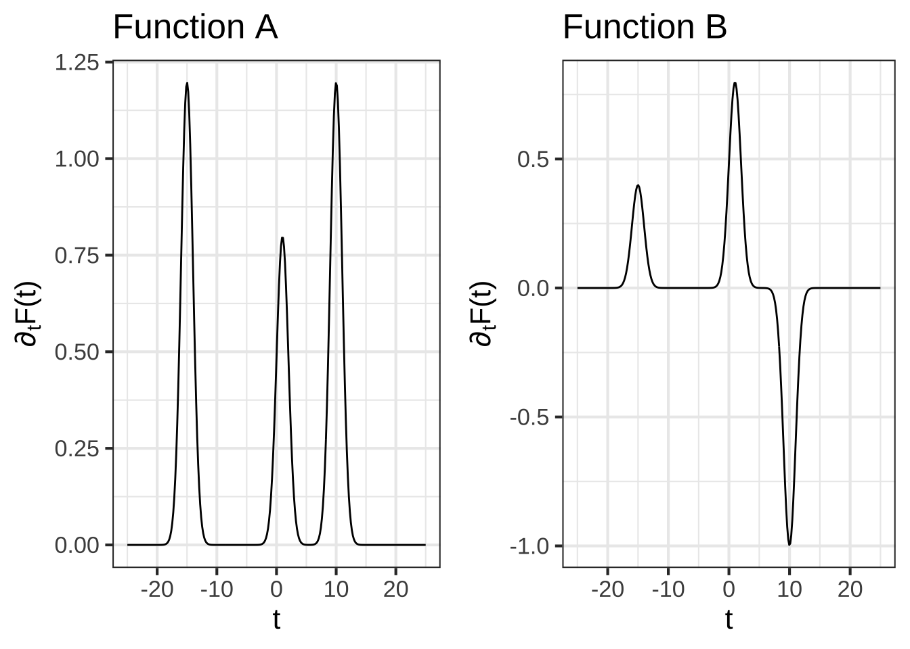
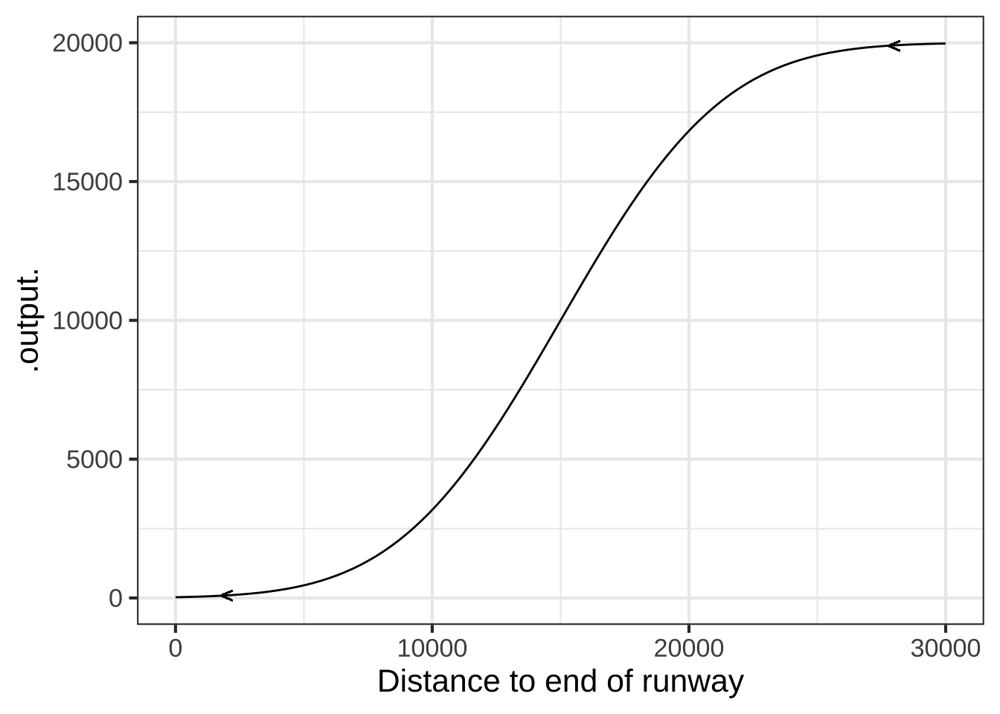
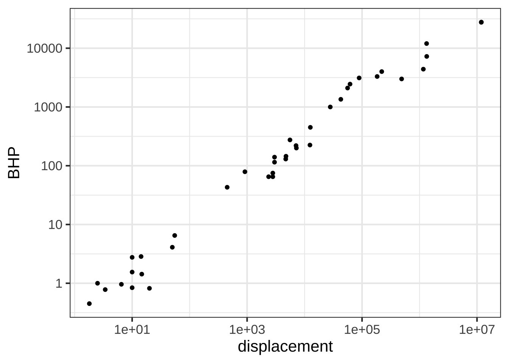
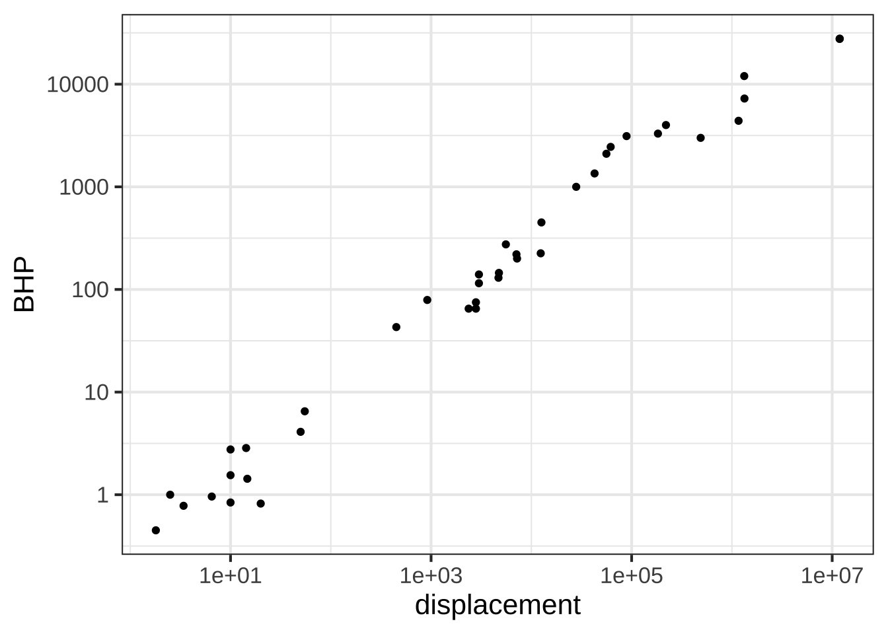
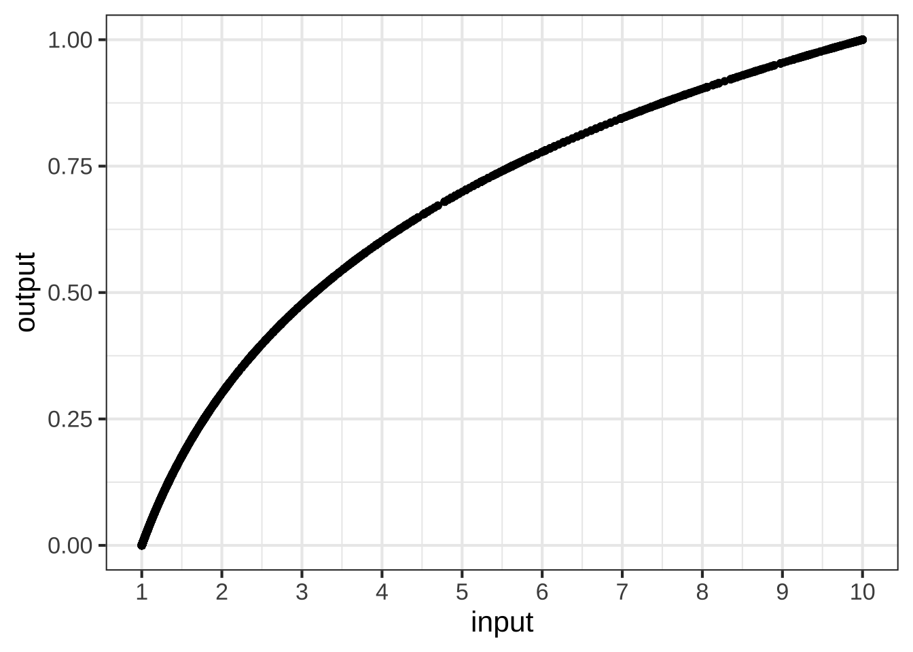

Chapter 14 Magnitudes
Undoubtedly you are comfortable with the standard way of writing numbers, for instance 33 or 512 or 1051. Elementary school students master the comparison of such numbers. Which is greater: 512 or 33? Which is less, 1051 or 512? You can answer such questions at a glance; the comparison can be accomplished simply by counting the number of digits. 1051 has four digits, so it is larger than the three-digit number 512. There are two digits in 33, so it smaller than 512. When two numerals have the same number of digits—say, 337 and 512—you can’t answer the “greater than” question by simple counting. Instead, you proceed from left to write and compare the number in each place. So, for 512 and 337, you compare 5 to 3 and … since 5 is greater than 3, 512 is greater than 337. If the two leading digits are the same, go on to the next digit and so on for all the digits in turn.  1600
1600
Things were not always this simple. Our number system that uses place and Arabic numerals is a human invention. An example of an earlier number system is Roman numerals. Here, comparison is hard. For instance, which of these three numbers is bigger?
\[\mbox{MLI or CXII or XXXIII}\] The typographically shorter number is the largest, and vice versa. Even when two Roman numerals have the same length, it’s not trivial to compare them on a place-by-place basis. For instance, IC is about fifteen times bigger than VI, even though I is much smaller than V.
14.1 Counting digits
Digit counting provides an easy, fast way to perform many calculations, at least approximately. What is \(\sqrt{10000}\)? There are five digits, and the square root of a number will have “half the number of digits.” So, \(\sqrt{10000} = 100\). What is \(10 \times 34\)? Easy: 340. Just append the one zero from 10 to the end of 34. What is \(1000 \times 13\)? Just as easy: 13,000. We even punctuate written numbers with commas and a period in order to facilitate counting digits.
Imagine having a digit counting function called digit(). It takes a number as input and produces a number as output. We don’t have a formula for digit(), but for some inputs the output can be calculated just be counting. For example:
- digit(10) \(\equiv\) 1
- digit(100) \(\equiv\) 2
- digit(1000) \(\equiv\) 3
- … and so on …
- digit(1,000,000) \(\equiv\) 6
- … and on.
The digit() function easily can be applied to the product of two numbers. For instance:
- digit(1000 \(\times\) 100) = digit(1000) + digit(100) = 3 + 2 = 5.
Similarly, applying digit() to a ratio gives the difference of the digits of the numerator and denominator, like this:
- digit(1,000,000 \(\div\) 100) = digit(1,000,000) - digit(100) = 6 - 2 = 4
14.2 Using digit() to understand magnitude
We haven’t shown you the digit() function for anything but the handful of discrete inputs listed above. It was a heroic task to produce the continuous version of digit(). The method is sketched out in 14.7.
In practice, digit() is so useful that it could well have been one of our basic modeling functions:
\[\text{digit(x)} = 2.302585 \ln(x)\] or, in R, log10(). We elected \(\ln()\) rather than digit() for reasons that will be seen when we study differentiation.
14.3 Quantity and magnitude
The familiar quantity 60 miles-per-hour is written as a number (60 here) followed by units. The quantity is neither the number nor the units: it is the combination of the two. For instance, 100 is obviously not the same as 60. And miles-per-hour is not the same as kilometers-per-hour. Yet, 60 miles-per-hour is almost exactly the same quantity as 100 kilometers-per hour.16 1610
6, 60, 600, and 6000 miles-per-hour are quantities that differ in size by orders of magnitude. Such differences often point to a substantial change in context. A jog is 6 mph, a car on a highway goes 60 mpg, a cruising commercial jet goes 600 mph, a rocket passes through 6000 mph on its way to orbital velocity.
In everyday speech, the difference between 60 and 6 is 54; just subtract. Modelers and scientists routinely mean something else: the difference between 60 and 6 is “one order of magnitude.” Similarly, 60 and 6000 are different by “two orders of magnitude,” and 6 and 6000 by three orders of magnitude.
In everyday English, we have phrases like “a completely different situation” or “different in kind” or “qualitatively different” (note the l) to indicate substantial differences. “Different orders of magnitude” expresses the same kind of idea but with specific reference to quantity.
The use of factors of 10 in counting orders of magnitude is arbitrary. A person walking and a person jogging are on the edge of being qualitatively different, although their speeds differ by a factor of only 2. Aircraft that cruise at 600 mph and 1200 mph are qualitatively different in design, although the speeds are only a factor of 2 apart. A professional basketball player (height 2 meters or more) is qualitatively different from a third grader (height about 1 meter).
Modelers develop an intuitive sense for when to think about difference in terms of a subtractive difference (e.g. 60 - 6 = 54) and when to look at orders of magnitude (e.g. 60-to-6 is one order of magnitude). This seems to be a skill based in experience and judgment, as opposed to a mechanical process.
One clue that thinking in terms of orders of magnitude is appropriate is when you are working with a set of objects whose range of sizes spans one or many factors of 2. Comparing baseball and basketball players? Probably no need for orders of magnitudes. Comparing infants, children, and adults in terms of height or weight? Orders of magnitude may be useful. Comparing bicycles? Mostly they fit within a range of 2 in terms of size, weight, and speed (but not expense!). Comparing cars, SUVs, and trucks? Differences by a factor of 2 are routine, so thinking in terms of order of magnitude is likely to be appropriate.
Another clue is whether “zero” means “nothing.” Daily temperatures in the winter are often near “zero” on the Fahrenheit or Celcius scales, but that in no way means there is a complete absence of heat. Those scales are arbitrary. Another way to think about this clue is whether negative values are meaningful. If so, thinking in terms of orders of magnitude is not likely to be useful.
You may have guessed that digits() is handy for computing differences in terms of orders of magnitude. Here’s how: 1620
- Make sure that the quantities are expressed in the same units.
- Calculate the difference between the
digits()of the numerical part of the quantity.
What is the order-of-magnitude difference in velocity between a snail and a walking human. A snail slides at about 1 mm/sec, a human walks at about 5 km per hour. Putting human speed in the same units as snail speed:
\[5 \frac{km}{hr} = \left[\frac{1}{3600} \frac{hr}{sec}\right] 5 \frac{km}{hr} = \left[10^6 \frac{mm}{km}\right] \left[\frac{1}{3600} \frac{hr}{sec}\right] 5 \frac{km}{hr} = 1390 \frac{mm}{sec} \]
Calculating the difference in digits() between 1 and 1390:
log10(1390) - log10(1)## [1] 3.143015So, about 3 orders of magnitude difference in speed. To a snail, we walking humans must seem like rockets on their way to orbit!
Animals, including humans, go about the world in varying states of illumination, from the bright sunlight of high noon to the dim shadows of a half moon. To be able to see in such diverse conditions, the eye needs to respond to light intensity across many orders of magnitude.
The lux is the unit of illuminance in the Système international. This table17 shows the illumination in a range of familiar outdoor settings:
| Illuminance | Condition |
|---|---|
| 110,000 lux | Bright sunlight |
| 20,000 lux | Shade illuminated by entire clear blue sky, midday |
| 1,000 lux | Typical overcast day, midday |
| 400 lux | Sunrise or sunset on a clear day (ambient illumination) |
| 0.25 lux | A full Moon, clear night sky |
| 0.01 lux | A quarter Moon, clear night sky |
For a creature active both night and day, they eye needs to be sensitive over 7 orders of magnitude of illumination. To accomplish this, eyes use several mechanisms: contraction or dilation of the pupil accounts for about 1 order of magnitude, photopic (color, cones) versus scotopic (black-and-white, rods, nighttime) covers about 3 orders of magnitude, adaptation over minutes (1 order), squinting (1 order).
14.4 Composing \(\ln()\)
The logarithm is the inverse of the exponential function. In other words, \[\ln(e^x) = x\ \ \text{and}\ \ e^{\ln(x)} = x\]
Think about this in terms of the kinds of quantities that are the input and output to each function. 1630
- Logarithm: The input is a quantity, the output is the magnitude of that quantity.
- Exponential: The input is a magnitude, the output is the quantity with that magnitude.
Exercise 14.3: ILESX
Question A A) True or false: \(2^x\) is a power-law function.
TRUE ☹︎ In a power-law function, the input is the base. In \(2^x\), the input is the exponent. So it’s an exponential function. FALSE ✓
Question B B) True or false: \(3/x^2\) is a power-law function.
TRUE ✓ FALSE ☹︎ This is the same as \(3 x^{-2}\). You can see that \(x\) is the base, so this is a power-law function.
Question C C) True or false: \(5\sqrt{x}\) is a power-law function.
TRUE ✓ FALSE ☹︎ This is the same as \(5 x^{1/2}\). The input \(x\) is the base, so this is a power-law function.
Question D D) The gravitational force, F, between two bodies is inversely proportional to the square of the distance \(d\) between them. Then …
- Inversely proportional to the square would be \(d^{-2}\) ☹︎
- \(F = kd^{-2}\) ✓
- This is a square-root relationship. ☹︎
- This is inversely proportional to the square root. ☹︎
Exercise 14.7: RWESX
Robert Boyle (1627-1691) iwas a founder of modern chemistry and of the scientific method in general. As any chemistry student already knows, Boyle sought to understand the properties of gasses. His results are summarized in Boyle’s Law.
We going to examine some data from Boyle’s lab notebooks. (They are preserved at the Royal Society in London. The data have been copied from this source.) The data are available to you as the data frame Boyle. The units of pressure are mmHg and the units of volume are cubic inches.
Open a sandbox to carry out some calculations with Boyle’s data. To see how the data frame is organized, use the head(Boyle) and names(Boyle) commands.
The scaffolding here contains a command for plotting out Boyle’s data. It also includes a command, gf_lm() that will add a graph of the best straight-line model to the plotted points. Recall that the # symbol turns what follows on the line into a comment, which is ignored by R. By removing the # selectively you can turn on the display of log axes.
gf_point(pressure ~ volume, data = Boyle) %>%
gf_refine(
# scale_x_log10(),
# scale_y_log10()
) %>%
gf_lm()
Question A (A) In the sandbox, plot pressure versus volume using linear, semi-log, and log-log axes. Based on the plot, and the straight-line function drawn, which of these is a good model of the relationship between pressure and volume?
linear ☹︎ This would look like a straight line on linear axes. exponential ☹︎ This would look like a straight line on semi-log axes. power-law ✓
We want to find the slope and intercept of the straight-line model. This can be hard to read off a graph with log scales, so you will use a special purpose function to find the formula for the straight-line function that fits the data. Here’s an example of how to use it.
fitModel(log(pressure) ~ a + b*volume, data = Boyle) %>%
coefficients()Notice that we use log(pressure) in the formula in the scaffolding. This would be appropriate if you think the data fall on a straight-line on semi-log axes. To use log-log axes, you would want to use log(volume) on the right side of the tilde expression. Or, if you’re using linear axes, leave out the logs altogether.
Question B (B) What is the slope produced by fitModel() when fitting the correct model type from part (1)?
- Roughly -1 ☹︎ You must be a very precise person!
- Almost exactly -1 ✓
- About -1.5 ☹︎ I’m not sure how you arrived at this answer.
- Slope \(> 0\) ☹︎ You should be able to see from the graph you made in part (1) that the slope is negative.
According to the appropriate model that you found in (A) and (B), interpret the function you found relating pressure and volume.
Question C (C) As the volume becomes very large, what happens to the pressure?
- Pressure becomes very small. ✓
- Pressure stays constant ☹︎ You can see from the graph in part (A) that pressure does change with volume.
- Pressure also becomes large. ☹︎ You can see from the graph in part (A) that pressure goes down as volume goes up.
- None of the above ☹︎
Return to your use of fitModel() to find the slope of the straight-line fit to the appropriately log-transformed model. When you carried out the log transformation, you could have used the so-called “natural logarithm” with expressions like log(pressure). Alternatively, you could have used the log base-10 or the log base-2, with expressions like log(pressure, base = 10) or log(volume, base = 2). Whichever you use, you should use the same base for all the logarithmic transformations when finding the straight-line parameters.
Question D (D) Does the slope of the straight line found by fitModel() depend on which base is used?
No ✓ Yes ☹︎ Did you use the same base for both logarithms in your fitModel() expression? There’s no way to tell. ☹︎ Yes, there is. Try using fitModel() with the different bases of log.
Question E (E) Does the intercept of the straight line found by fitModel() depend on which base is used?
Yes ✓ Good. But this will come out in the wash when you calculate the parameter \(C\) in \(C x^b\), since \(C\) will be either \(2^\mbox{intercept}\) or \(10^\mbox{intercept}\) or \(e^\mbox{intercept}\) depending on the base log you use. No ☹︎ Are you sure you tried different bases?
14.5 Magnitude graphics
Exercise 14.1: ILXEG
gf_point(BHP ~ displacement, data = Engines) %>%
gf_refine(scale_x_log10(), scale_y_log10())
Based on the log-log plot of horsepower (BHP) versus engine displacement, answer these questions.
Question A How many engines have a displacement of 1 liter or less?
none ☹︎ Perhaps you recognized that the left-most tick mark corresponds to a value of 1, and that no data points are 1 or smaller. But one liter corresponds to 1000 cc. 7 ☹︎ This is the number of engines with displacement of 10 cc or smaller. But one liter corresponds to 1000 cc. 14 ✓ Right. It’s the \(10^3\) tick that marks 1 liter, since 1 liter is 1000 cc. 25 ☹︎ That would be true if the cut-off were 10 liters. But it’s not. randomAnswerOrder ☹︎ FALSE
Question B Using the log-log plot, how many decades of BHP are spanned by the data?
4 ☹︎ Not a bad answer, but not the best one either. Notice that the smallest engine is about half a decade below 1 BPM, and the largest is about half a decade above 10,000 BPH 5 ✓ 100 ☹︎ The number \(10^{100}\) is called a googol and is roughly how many particles (including photons, neutrinos, etc.) are in the universe. Imagine, quite contrary to fact, that 1 BHP could be generated by burning one molecule of fuel per second. Then as many fuel molecules as there are particles in the universe would have to be burned each second to power an engine at the high end of a span of 100 decades.
Derive straight-line form of power-law function
Suppose \(f(x) = A x^p\). The \(\ln(f(x)) = p \ln(x) + \ln(A)\).
f <- makeFun(A * x^p ~ x, A=1, p=2.5)
Pts <- tibble::tibble(
x = seq(1, 50, length=10),
y = f(x),
color = rainbow(length(x))
)
P <- slice_plot(f(x) ~ x, domain(x=c(0,50))) %>%
gf_point(y ~ x, color=~color, data = Pts) %>%
gf_refine(scale_color_identity())
P
P %>%
gf_refine(scale_y_log10(), scale_x_log10())## Warning: Transformation introduced infinite values in continuous y-axis## Warning: Transformation introduced infinite values in continuous x-axis
Exercise 14.15: EWLCI
Here is a plot of the power output (BHP) versus displacement (in cc) of 39 internal combustion engines.
gf_point(BHP ~ displacement, data = Engines) %>%
gf_lims(y = c(0, 30000))
Question A Your study partner claims that the smallest engine in the data has a displacement of 2000 cc (that is, 2.0 liters) and 100 horsepower. Based only on the graph, is this claim plausible?
- Yes, because 2000 cc and 100 hp would look like (0, 0) on the scale of this graph. ✓
- Yes, because that size engine is typical for a small car. ☹︎ That may be, but certainly you’ve encountered lawn mower engines that are much smaller.
- No, the smallest engine is close to 0 cc. ☹︎ Would you be able to distinguish visually an engine of 1 cc from an engine of 1000cc on this graph? Both these values would lie on the same horizontal pixel in the graph.
- No, my study partner is always wrong. ☹︎ Be that as it may, we’re looking for a principled answer, not an ad hominem one.
Semi-log scales
The next command will make a graph of the same engine data as before, but with a log scale on the horizontal axis. The vertical axis is still linear.
gf_point(BHP ~ displacement, data = Engines) %>%
gf_refine(scale_x_log10())
Question B Using just the graph, answer this question: The engines range over how many decades of displacement? (Remember, a decade is a factor of 10.)
- 7 decades ✓
- Can’t tell ☹︎ Yes, you can. Figure out what one decade corresponds to in terms of distance on the log axes.
- \(10^7\) decades ☹︎ The estimated volume of the entire universe is about \(4 \times 10^{86}\) cc. The volume of a neutron is about \(6 \times 10^{-81}\) cc. The range between a neutron and the universe is therefore about \(86 - -81 = 167\) decades. Do you think it likely that there is an internal combustion engine smaller than a neutron or larger than the universe?
- About 3.5 decades ☹︎ Perhaps you’re treating the distance between axis labels as one decade. Look carefully and you see that it’s actually a factor of 100, that is, two decades.
Log-log scales
In order to make a graph with log-log scales, we refine the graph with both scale_y_log10() and scale_x_log10(), as in the following …
gf_point(BHP ~ displacement, data = Engines) %>%
gf_refine(scale_x_log10(), scale_y_log10())
Based on the log-log plot, answer these questions.
Question C How many engines have a displacement of 1 liter or less?
none ☹︎ Perhaps you recognized that the left-most tick mark corresponds to a value of 1, and that no data points are 1 or smaller. But one liter corresponds to 1000 cc. 7 ☹︎ This is the number of engines with displacement of 10 cc or smaller. But one liter corresponds to 1000 cc. 14 ✓ Right. It’s the \(10^3\) tick that marks 1 liter, since 1 liter is 1000 cc. 25 ☹︎ That would be true if the cut-off were 10 liters. But it’s not. randomAnswerOrder ☹︎ FALSE
Question D Using the log-log plot, how many decades of BHP are spanned by the data?
4 ☹︎ Not a bad answer, but not the best one either. Notice that the smallest engine is about half a decade below 1 BPM, and the largest is about half a decade above 10,000 BPH 5 ✓ 100 ☹︎ The number \(10^{100}\) is called a googol and is roughly how many particles (including photons, neutrinos, etc.) are in the universe. Imagine, quite contrary to fact, that 1 BHP could be generated by burning one molecule of fuel per second. Then as many fuel molecules as there are particles in the universe would have to be burned each second to power an engine at the high end of a span of 100 decades.
14.6 Magnitude scales
Plotting the logarithm of a quantity gives a visual display of the magnitude of the quantity and labels the axis as that magnitude. A useful graphical technique is to label the axis with the original quantity, letting the position on the axis show the magnitude. 1640
To illustrate, Figure ??(left) is a log-log graph of horsepower versus displacement for the internal combustion engines reported in the Engines data frame. The points are admirably evenly spaced, but it is hard to translate the scales to the physical quantity. The right panel in Figure ?? shows exactly the same data points, but now the scales are labeled using the original quantity.
gf_point(log(BHP) ~ log(displacement), data = Engines)
gf_point(BHP ~ displacement, data = Engines) %>%
gf_refine(scale_y_log10(), scale_x_log10())  

The tick marks on the vertical axis in the left pane are labeled for 0, 2.5, 5.0, 7.5, and 10. That doesn’t refer to the horsepower itself, but to the logarithm of the horsepower. The right pane has tick labels that are in horsepower at positions marked 1, 10, 100, 1000, 10000.
Such even splits of a 0-100 scale are not appropriate for logarithmic scales. One reason is that 0 cannot be on a logarithmic scale in the first place since \(\log(0) = -\infty\).
Another reason is that 1, 3, and 10 are pretty close to an even split of a logarithmic scale running from 1 to 10. It’s something like this:
1 2 3 5 10 x
|----------------------------------------------------|
0 1/3 1/2 7/10 1 log(x)It’s nice to have the labels show round numbers. It’s also nice for them to be evenly spaced along the axis. The 1-2-3-5-10 convention is a good compromise; almost evenly separated in space yet showing simple round numbers.
Exercise 14.19: TLEXE

Question A Consider the axis scales shown above. Which kind of scale is the horizontal axis?
- linear ✓ You can see this because a given length along the axis corresponds to the same arithmetic difference regardless of where you are on the axis. the distance between 0 and 50 is exactly the same as the difference between 50 and 100, or the distance between 150 and 200.
- logarithmic ☹︎ A clue that an axis is not logarithmic is that there is a zero marked. The log of zero is \(-\infty\), which can’t appear on any actual graph. Another key is whether the scale shows doubling behavior. The distance between 50 and 100 represents one doubling: 100 is twice 50. If the scale were logarithmic, moving forward that same distance from 100 would bring you to 200. But that’s not what happens here.
- semi-logarithmic ☹︎ “Semi-logarithmic” is not about a single axis but about two axes: horizontal and vertical. It means that one axis is linear while the other is logarithmic.
- log-log ☹︎ “Log-log” is not about a single axis but about two axes. It means that both the horizontal and vertical axes are logarithmic.
Question B Which kind of scale is the vertical axis?
- linear ☹︎ Measure the distance from 30 to 50. If the scale were linear, then moving that same distance from 50 would bring you to 70, and moving that distance again would bring you to 90. But you can see that instead of reaching 90, you’d reach something greater than 100 on the scale. So the scale is not linear.
- logarithmic ✓
- semi-logarithmic ☹︎ “Semi-logarithmic” is not about a single axis but about two axes: horizontal and vertical. It means that one axis is linear while the other is logarithmic.
- log-log ☹︎ “Log-log” is not about a single axis but about two axes. It means that both the horizontal and vertical axes are logarithmic.
Question C Given your answers to the previous two questions, what kind of plot would be made in the frame being displayed at the top of this question?
semi-log ✓ log-log ☹︎ A log-log plot has log scales for both axes. The horizontal axis here is linear. linear-linear ☹︎ No, the vertical axis is logarithmic.
Exercise 14.23: SELIX
The data frame SSA_2007 comes from the [US Social Security Administration(https://www.ssa.gov/oact/STATS/table4c6.html) and contains mortality in the US as a function of age and sex. (“Mortality” refers to the probability of dying in the next year.)
Open a sandbox and copy in the following scaffolding to see the organization of the data.
data(SSA_2007)
SSA_2007Once you understand the data organization, delete the old scaffolding and insert this: ::: {scaffolding}
data(SSA_2007)
gf_point(mortality ~ age, color = ~ sex, data = SSA_2007)There is a slight mistake in the way the command is written, so and error message will be generated. To figure out what’s wrong, read the error message, check the variable names, and so on until you successfully make the plot. :::
Question A A) What was the mistake in the plotting command in the above code box?
- Variable names didn’t match the ones in the data. ✓
- The tilde in the argument
color = ~ sex☹︎ Thecolor =argument is right. The value being used,~ sex, is a one-sided formula and is used for things like color, shape, transparency, ….
- The data frame name is spelled wrong. ☹︎ No.
- There is no function
gf_point(). ☹︎ No.gf_point()is one of the more commonly used plotting functions
Essay question tmp-11: B) What’s the obvious (simple) message of the above plot?
Now you are going to use semi-log and log-log scales to look at the mortality data again. To do this, you will use the gf_refine() function.
gf_point( __and_so_on__) %>%
gf_refine(
scale_y_log10(),
scale_x_log10()
)Fill in the __and_so_on__ details correctly and run the command in your sandbox.
As written, both vertical and horizontal axes will be on log scales. This may not be what you want in the end.
Arrange the plotting command to make a semi-log plot of mortality versus age. Interpret the plot to answer the following questions. Note that labels such as those along the vertical axis are often called “decade labels.”
Question B The level of mortality in year 0 of life is how much greater than in year 1 and after?
- About twice as large. ☹︎ C) Hint: How much is the change between successive labels on the y axis?
- About five times as large ☹︎ C) Hint: How much is the change between successive labels on the y axis?
- About 10 times as large ✓
- About 100 times as large ☹︎ C) Hint: How much is the change between successive labels on the y axis?
Question C D) Near age 20, the mortality of males is how much compared to females?
- Less than twice as large. ☹︎ Hint: Due to the nature of logs, a difference of half a decade corresponds to a change of \(\sqrt{10}\).
- A bit more than three times as large ✓
- About 8 times as large ☹︎ Hint: Due to the nature of logs, a difference of half a decade corresponds to a change of \(\sqrt{10}\).
- About 12 times as large ☹︎ Hint: Due to the nature of logs, a difference of half a decade corresponds to a change of \(\sqrt{10}\).
Question D E) Between the ages of about 40 and 80, how does mortality change with age?
- It stays about the same. ☹︎ But the curve is sloping up, isn’t it?
- It increases as a straight line. ☹︎ It would be fair to say this about the logarithm of mortality. But a straight line in log mortality means that mortality itself is increasing exponentially.
- It increases exponentially. ✓
- It increases, then decreases, then increases again. ☹︎ Interesting that you would say this when the function in clearly monotonically increasing above age 30.
Remake the plot of mortality vs age once again, but this time put it on log-log axes. The sign of a power-law relationship is that it shows up as a straight line on log-log axes.
Question E F) Between the ages of about 40 and 80 is the increase in mortality better modeled by an exponential or a power-law process?
- Power-law ☹︎ But it’s hard to find any straight line on the log-log plot.
- Exponential ✓ Right. The graph is much closer to a straight line on semi-log scales than on log-log scales.
- No reason to prefer one or the other. ☹︎ One is much closer to a straight line than the other.
14.7 Fractional digits (optional)
So far, we have the digit() function in a tabular form: 1650
| input | output |
|---|---|
| \(\vdots\) | \(\vdots\) |
| 0.01 | -2 |
| 0.1 | -1 |
| 1 | 0 |
| 10 | 1 |
| 100 | 2 |
| 1000 | 3 |
| 10,000 | 4 |
| 100,000 | 5 |
| 1,000,000 | 6 |
| \(\vdots\) | \(\vdots\) |
Here’s the point-plot presentation of the table:

Figure 14.1: Connecting the data points for the digit function to make a continuous function.
We’ve imagined digits() to be a continuous function so we’ve connected the gaps with a straight line. Now we have a function that has an output for any input between 0.01 and 1,000,000, for instance, 500,000.
The angles between consecutive line segments give the function plotted in Figure 14.1 an unnatural look. Still, it is a continuous function with an output for any input even if that input is not listed in the table.
Starting around 1600, two (now famous) mathematicians, John Napier (1550-1617) and Henry Briggs (1561-1630) had an idea for filling in gaps in the table. They saw the pattern that for any of the numbers \(a\) and \(b\) in the input column of the table \[ \text{digit}(a \times b) = \text{digit}(a) + \text{digit}(b)\] This is true even when \(a=b\). For instance, digit(10)=1 and digit(10\(\times\) 10) = 2.
Consider the question what is digit(316.2278)? That seems a odd question unless you realize that \(316.2278 \times 316.2278 = 100,000\). Since digit(100000) = 5, it must be that digit(316.2278) = 5/2.
Another question: what is digit(17.7828)? This seems crazy, until you notice that \(17.7828^2 = 316.2278\). So digit(17.78279) = 5/4.
It happens that for a couple of thousand years mathematicians have known how to compute the square root of any number to a high precision. By taking square roots and dividing by two, it’s easy to fill in more rows in the digit()-function table. You get even more rows by noticing other simple patterns like \[\text{digit}(a/10) = \text{digit}(a) -1 \ \ \and \ \ \ \text{digit}(10 a) = \text{digit}(a) + 1\]
Here are some additional rows in the table
| input | output | Why? |
|---|---|---|
| 316.2278 | 2.5 | From \(\sqrt{\strut100,000}\) |
| 17.17828 | 1.25 | From \(\sqrt{\strut 316.2278}\) |
| 4.21696 | 0.625 | From \(\sqrt{\strut 17.17828}\) |
| 31.62278 | 1.5 | From 316.2278/10 |
| 3.162279 | 0.5 | From 31.62278/10 |
You can play this game for weeks. We asked the computer to play the game for about half a second and expanded the original digit() table to 7975 rows.
Figure ?? plots the expanded digits() function table.
 Now we have a smooth function that plays by the digit rules of multiplication.
Henry Briggs and his assistants did a similar calculation by hand. Their work was published in 1617 as a table.
Figure 14.2: Part of the first page of Henry Briggs table of logarithms
The table was called the Chilias prima, Latin for “First group of one thousand.” True to its name, the table gives the output of digits() for the inputs 1, 2, 3, …, 998, 999, 1000. For instance, as you can see from the top row of the right-most column, digits(67) = 1.82607480270082.
In everyday speech, 67 has two digits. The authors of Chilias prima sensibly didn’t use the name “digit()” for the function. They chose something more abstract: “logarithm().” Nowadays, this function is named \(\log_{10}()\). In R, the function is called log10(). 1660
log10(67)## [1] 1.826075Our main use for \(\log_{10}()\)/log10() will be to count digits in order to quickly compare the magnitude of numbers. The difference digits(\(x\)) - digits(\(y\)) tells how many factors of 10 separate the magnitude of the \(x\) and \(y\).
Another important logarithmic/digit-counting function is \(\log_2()\), written log2() in R. This counts how many *binary digits are in a number. For us, \(\log_2(x)\) tells how many times we need to double, starting at 1, in order to reach \(x\). For instance, \(\log_2(67) = 6.06609\), which indicates that \(67 = 2\times 2 \times 2 \times 2 \times 2 \times 2 \times 2^{0.06609}\)
\(\log_2(x)\) and \(\log_{10}(x)\) are proportional to one another. One way to think of this is that they both count “digits” but report the results in different units, much as you might report a temperature in either Celsius or Fahrenheit. For \(\log_2(x)\) the units of output are in bits. For \(\log_{10}(x)\) the output is in decades.
A third version of the logarithm function is called the natural logarithm and is denoted \(\ln()\) in math notation and simply log() in R. We’ll need additional calculus concepts before we can understand what justifies calling \(\ln()\) “natural.”
Exercise 14.27: TLCIX
EXERCISE: Compute \(10^y\) to convert a “number of digits” into the number whose digits are being counted. For instance, \(10^2.5\) is 316.228.
EXERCISE: How many binary digits in 64? in 127?
EXERCISE: \(\log_{10}(x)\) and \(\log_2(x)\) are proportional to one another. What’s the constant of proportionality?95.69 km/hr is exactly 60 mph.↩︎